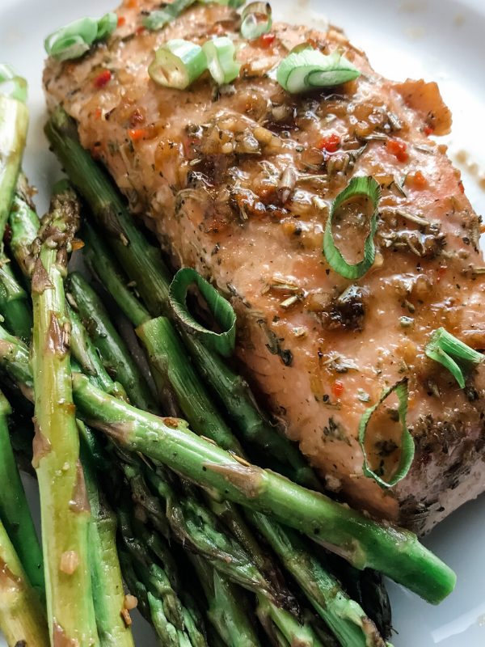

Home
Salmon de Provence

Description
This is a simple recipe for making salmon and asparagus in an air fyer.
It is quick and easy for a weeknight meal after work.
Ingredients
- 2 Salmon Filets
- 10 asparagus
- 1 clove garlic minced
- 1/2 tsp salt
- 1/2 tsp pepper
- 1 tbsp avacado oil
- 2 tbsp herbs de provence
- 2 tbsp yellow mustard
Steps
- Preheat air fryer to 370
- Coat salmon filets in yellow mustard
- Cover liberally in herbs de provence
- Coat asparagus in avacado oil
- Toss in mixing bowl with salt, pepper, and minced garlic
- Place salmon and asparagus in airfyer and cook for 10 minutes
Thanks for reading, Enjoy!